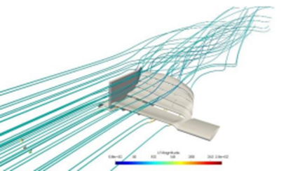
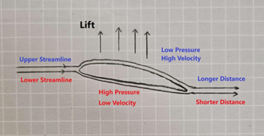
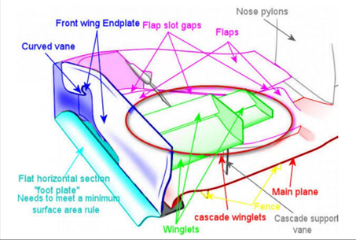

Table of contents |
|---|
| Abstract |
| Introduction |
| Down force and its effects |
| How is Down force generated |
| Influence of the wing on drag |
| Conclusion |
Formula One is the pinnacle of racing and aerodynamics plays a key role in it.
There is a number of key parts that affects the aerodynamics in this research project I talk about the front wing,
its components and its effects. The first thing I discuss is how the downforce created by the front wing helps the car
perform its best and what different parts create down force.
Then I talk about how down force us generated by down force and finally I talk about how the front wing infuences drag.
Aerodynamics has been part of formula one since its birth however for a long time it was secondary
to the engine output (Castro, Rana, 2022). Nowadays due to regulations there isn’t much you can do to a Formula One car’s
engine to make it go faster so the main deciding factor between teams winning is the aerodynamic design of the car
as it is what provides down force and minimizing the drag. The front wing is the most important part of the aerodynamics
of the car. This is because it produces a big chunk of the downforce and it influences the air flow over the
rest of the body ) (Patil, Kshirsagar, Parge, 2014).
Down force is a crucial part of the aerodynamics as it is what creates the pressure centre.
“The pressure centre, when placed in the rear part of the car, ensures that the front wheels have less maximum lateral force
and the car understeers. On the other hand, if the pressure centre is placed in the front part of the car,
the rear wheels have less maximum lateral force, and therefore the car oversteers (Castro, Rana, 2022)”.
The front wing is one of the most important parts that generates down force as “it generates about 35% alone of the
overall downforce generated by the other car (Abdul-Rahman, Al-Failkawi, Hasan, Abdullah, Bin-Ali, Walid Smew, 2018)”.
The front wing is made up of multiple smaller wings called winglets making the front wing and is not one whole wing like
the name suggests (see figure 1 (Gurky, Adhitya,2023), this is called a multi element wing and is the most effective way to
generate down force, they can be easily modified on the day to fit the driver and the tracks needs
(Kachare, 2017) (Patil, Kshirsagar, Parge, 2014).This can be quite useful as if the track has a lot of sharp or long turns
or the conditions are quite wet the wing can be adjusted so that the car over steers or under steers and performs its best.
Another aspect of the front wing that increases the down force is the endplates. They can increase downforce because as
they’re size increases so does the wing aspect ratio which then causes the down force to increase.

Figure 1: 2019 front wing
The front wing is just like a normal airplane wing but inverted so instead of lifting the car up it provides the downforce
that is needed. Just like an airplane wing the downforce is generated by using Bernoulli’s principle.
This is when the air is split into two and the air that goes over the top of the wing is slow moving and quite dense causing
a high-pressure zone above the wing plates and the air that passes below the wing due to the shape of the plates is fast moving
and less dense causing a low-pressure zone. This difference in pressure pushes the wing towards low pressure zone which is
otherwise known as lift. An example of this can be seen in figure 2(Falkborn,Hasslgren, 2024)

Figure 2: Pressure distribution on an airfoil
As the front wing not only produces downforce but also influences the way air flows around the car which means it also
influences drag around the car (Patil, Kshirsagar, Parge, 2014). One of the main things that causes drag are the wheels,
this is because due to regulations state that all four wheels must be exposed and no body panels can cover them.
This is an issue because as they are exposed they produce about 40% of the total drag.
The front wing produces a trailing vortex system which is shed by the endplates, strakes, and the central section of
the wing (see figure 3 (Patil, Kshirsagar, Parge, 2014)). This trailing vortex system controls the wake of the front wheels
and moves it away from the car therefore reducing drag by allowing the air to move smoothly around
the car (Martins, Correia, Silva, 2021).

Figure 3: Details of front wing
This research project provides information that can be quite interesting and useful to anyone that is already interested
in formula one or wants to learn more about formula one cars and their aspects. Although I only discussed how downforce
is important, how downforce is generated and how drag is affected by the front wing a few conclusions can be made.
The first is that the front wing in its main function is like an airplane wing turned upside down and unlike its name suggests
in its current form it is not one solid wing but made up of many small wings. Secondly, we find that the front wing produces
a big chunk of the down force and that down force is crucial for optimising turns so that the car can achieve the fastest
lap time possible. It can also be concluded that not only the wing part of the front wing produces down force but do to
the wing aspect ratio the endplates also generate down force. Finally, the last thing we can concluded is that the front wing
reduces the drag that is caused by the wheels which is the majority of the drag. The main conclusion is that even though
there are two main effects of the front wing on the front wing within the front wing there are a lot of little parts in
the front wing that contribute to those effects.